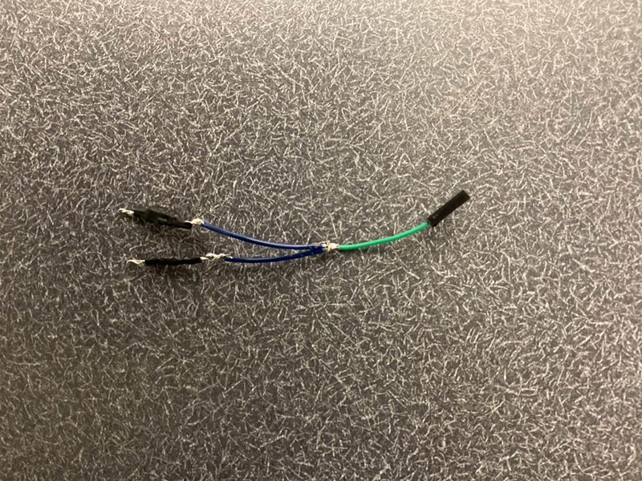

Team Members: Josh DeWeese, Nolan Jeung
Support: Charlie Refvem, Vincent Ngo, Jason Wong
Overview
This autonomous ping pong launcher is capable of both manual and automatic targeting and launching. It rotates about two axes to aim, detects objects using a TF-Luna LIDAR, and fires ping pong balls using dual flywheels. The system is built around a custom PCB featuring an STM32 microcontroller, motor drivers, and dedicated I2C lines.
The goal of this project was to create a functional and robust autonomous targeting system while designing and assembling most of the electronics and mechanical components from scratch.
üîß Major Hardware Components
- 2× Pololu 50:1 Gearmotors with Encoders – control turret rotation
- 2× Maxon DCX 22 mm Motors – power the flywheels
- 1× MG90 Servo – feeds ping pong balls into flywheels
- TF-Luna LIDAR Sensor – detects range to target
- BNO055 IMU – reports heading (used for debug; not integrated into control loop)
- Custom PCB – provides regulated power, microcontroller I/O, and motor driver interfaces
üì¶ PCB Design and Iteration
Fusion 360 Schematics

Fusion 360 CAD Render
Assembled PCB - Before Hotfixes

Assembled PCB - After Hotfixes

This board includes:
- STM32F411CEU6 microcontroller
- DRV8251 motor drivers
- Barrel jack for 12V input
- 5V and 3.3V rails (via Buck and LDO regulators)
- I2C, UART, and GPIO breakout headers
⚠️ Roadblocks and Debugging Challenges
1. Motor Driver Output Failures
Issue: Turret motor driver (DRV8251) failed to drive motors consistently.
Cause: Missing or insufficient bulk capacitance and improper IPROPI pin handling.
Fix:
- Added 0.1 µF and 4.7 µF capacitors to stabilize power rails
- Pulled IPROPI to GND through a 1.5kΩ resistor
Fusion Schematic Before Fix

Fusion Schematic After Fix

2. LIDAR Inconsistent I2C Behavior
Issue: TF-Luna LIDAR would intermittently drop off the I2C bus.
Cause: No pull-up resistors on SDA and SCL lines.
Fix: Manually added 10kΩ pull-ups from both lines to 3.3V.
Fusion Schematic Before Fix

Fusion Schematic After Fix

Physical Pull-up Resistor Fix (3 Angles)



ü߆ Software & Control Strategy
- Main Loop FSM: Manages launcher states (initialize, idle, move, scan, fire)
- Manual Mode: Accepts UART commands like T1XX, M2XX, FIRE, etc.
- Auto Mode: Scans with turret, stores LIDAR readings, picks closest target
- IMU Mode: Streams heading data (future FSM integration planned)
FSM States Include:
- STATE_0: Initialize
- STATE_1: Idle/Wait
- STATE_2: Move Turret
- STATE_3: Read LIDAR
- STATE_4: Spin Flywheels
- STATE_5: Fire via Servo
- STATE_6: Autonomous Scan Mode
üìà Future Work
- Use IMU feedback to correct turret drift
- Add computer vision for target recognition
- Replace UART shell with GUI or wireless input